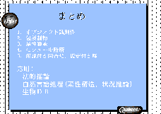

<html>
<head>
<title> Slide No.15 </title>
</head>

<frameset rows="430,130">

<noframes>
<body>
<a href="GIF/slide15.GIF"></a>

<a href="AU/voice15.au">
	</a>[195K]<p>
<!--		-->
今回は、<b> Quixote </b> の主な特徴である、
<a href=""> オブジェクト識別性、包摂制約、属性継承、
モジュール階層、仮説付き問い合わせ、仮定付き解
</a> を説明しました。<p>

<a href=""> <b> Quixote </b> の応用 </a> としては、法的推論、素性構造、
状況推論の自然言語処理、生物データベースがあります。
<p>
<!--		-->

<hr>
<a href="slide16.html" target="_top">次の OHP へ</a>
<br><br>
<a href="slide14.html" target="_top">前の OHP へ</a>
<br><br>
<a href="HomePage.html" target="_top">OHP の一覧へ</a>
</body>
</noframes>

<frame src="onlyslide15.html">
<frame src="buttonexpla15.html">

</frameset>

</html>
